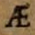

Level 1
Both the consonant ligatures (tz, ct, ts, ff etc.) as well as the ligature ij and the ligatures commonly used in German-language texts such as fi, fl, ft, their derivatives, as well as fk, fj, fh, fb, fz, ll, mm, nn, st, ch, ck, ct, th, tt, tz, kk, Qu, ſi, ſſ, ſt, ſch are always to be split. The existence of the ligature is not documented.
Vocal ligatures are always transcribed:
| Original | Character | Entity | Description |
|---|---|---|---|
 |
æ | U+00E6 |
LATIN SMALL LETTER AE |
 |
œ | U+0153 |
LATIN SMALL LIGATURE OE |
|  | Æ | U+00C6 |
LATIN CAPITAL LETTER AE |
 |
Π| U+0152 |
LATIN CAPITAL LIGATURE OE |